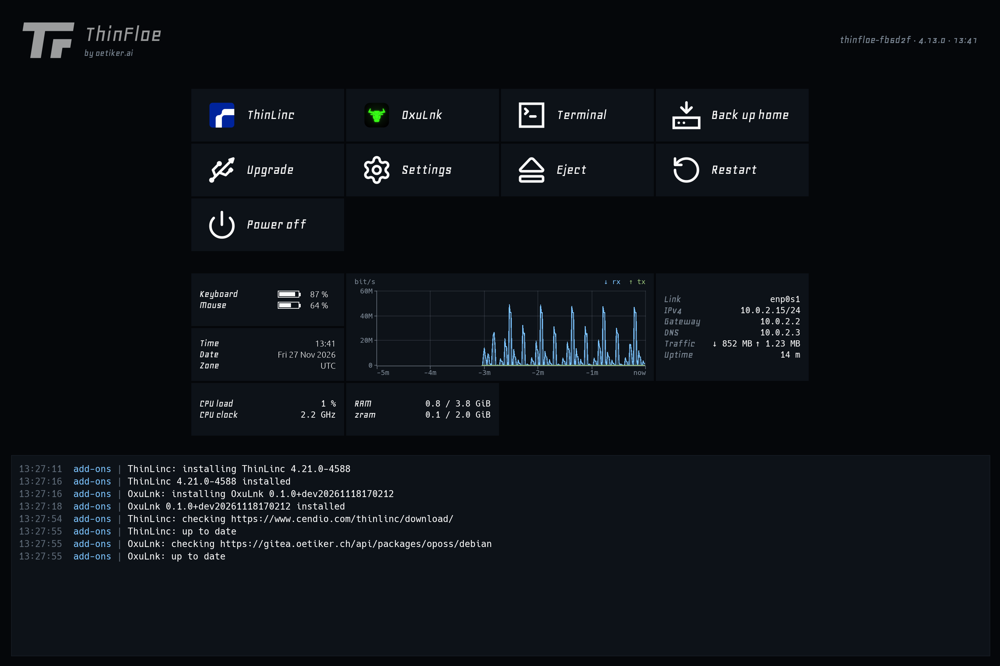

A thin client that floats in RAM

Boots a PC from a USB stick or the network. Runs entirely in memory. Gone at power‑off, and your home comes back at the next boot.
github.com/oposs/thinfloe

Boots a PC from a USB stick or the network. Runs entirely in memory. Gone at power‑off, and your home comes back at the next boot.
github.com/oposs/thinfloe